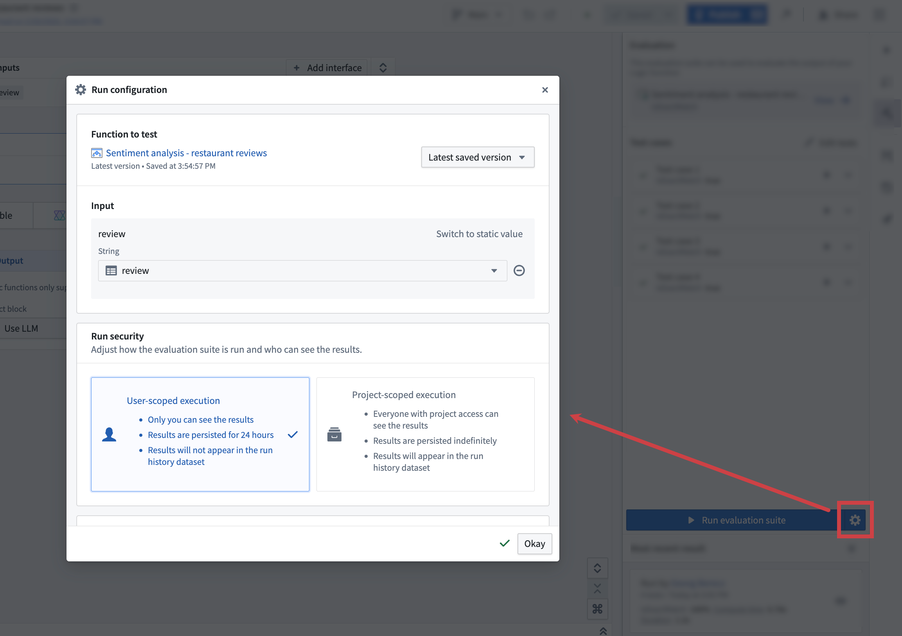
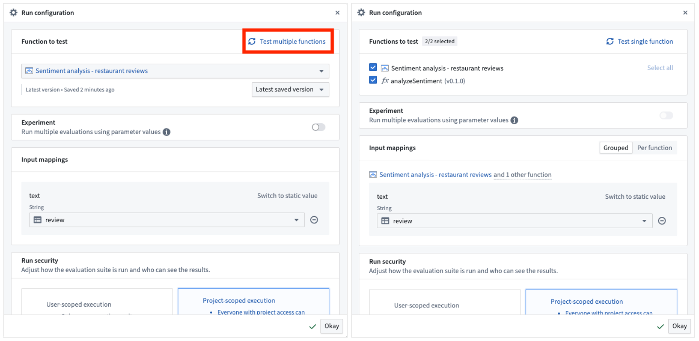
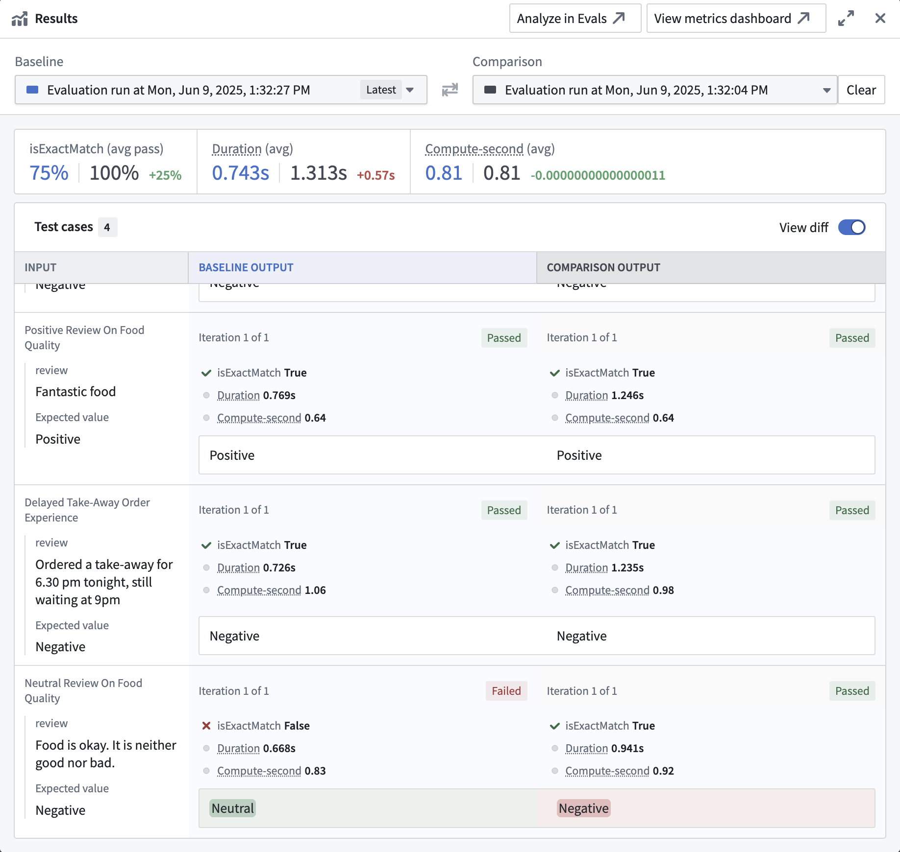
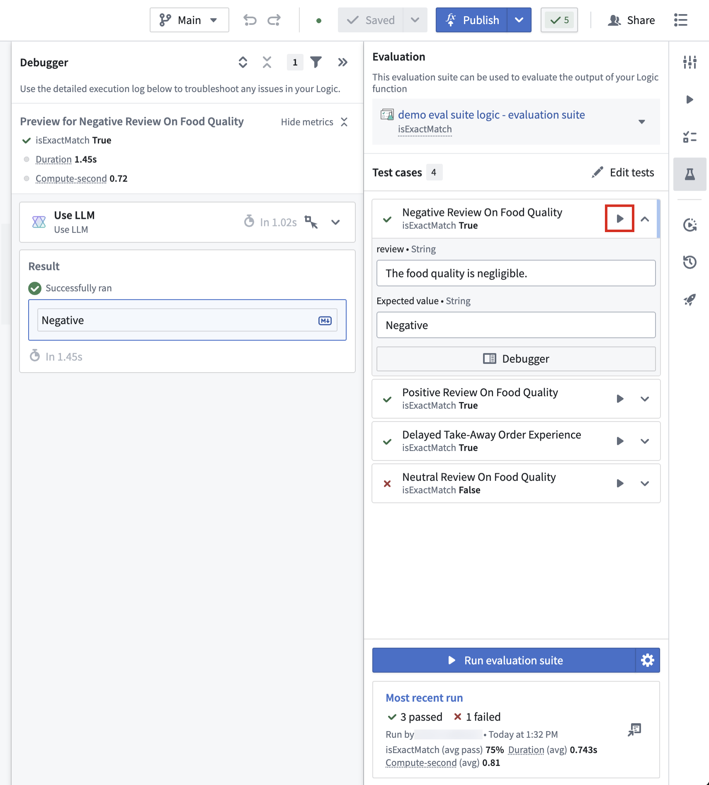

An evaluation suite can be run from different locations, including the AIP Logic Evals sidebar and the AIP Evals application. You can choose to run a full evaluation suite or only execute single test cases. The latter is useful for debugging and quick function iteration.
In AIP Logic, navigate to the AIP Evals sidebar panel and select Run evaluation suite. If you have unsaved changes, Save and run will be displayed instead, ensuring that changes are saved before running an evaluation suite.
Alternatively, you can run an evaluation suite from the AIP Evals application. To open the application select View in the AIP Logic sidebar, or open the evaluation suite from the file system. In the Evals application you can run the evaluation suite by selecting Run evaluation suite in the upper-right corner.
There are multiple configuration options available when running an evaluation suite. To access run configuration options, select the cog icon next to Run evaluation suite. This will open a dialog with the following options:

Evaluation suites can be run against functions authored in AIP Logic and functions authored in Code repositories. Depending on this function source, you can target different versions of your function:
If your evaluation suite has multiple target functions configured, you can run evaluations against multiple functions simultaneously from AIP Evals. Select Test multiple functions to switch to multi-target mode, then select which targets to include in the run.

:::callout{theme="neutral"} Experiment configuration is not available when running in multi-target mode. :::
Input mappings need to be provided to map values in evaluation suite columns to the inputs expected by the evaluated function. You will be able to select suite columns with types that match expected function inputs.
Usually, the evaluation suite column name and the function input will match, but this is not required.
You can choose between two execution modes when running an evaluation suite; User-scoped execution and Project-scoped execution. User-scoped execution is the default mode and executes the evaluation suite using the permissions of the user who initiated the run.
User-scoped execution:
Project-scoped execution [Beta]:
:::callout{theme="neutral" title="Beta"} Project-scoped execution is in the beta phase of development and may not be available on your enrollment. Functionality may change during active development. If you encounter issues with this execution mode, try running your evaluation suite with user-scoped execution instead. :::
You can specify the number of times each test case should be run. Due to the non-deterministic nature of LLMs, we recommend running test cases at least three times for LLM-backed functions. The results of each iteration are aggregated to provide a comprehensive overview of the function's performance.
A high variance in numeric evaluators like ROUGE score can indicate that the test case and evaluator are not meaningful and require further refinement.
By default, ten test cases are executed in parallel. You can adjust the number of parallel test case executions to optimize the performance of your evaluation suite run. Reducing it can be beneficial when running into rate limits.
In addition to automatically captured run metadata like used branch, version, or model, you can add custom metadata to your evaluation suite runs.
This metadata is provided as key-value pairs and can be used to differentiate runs in the evaluation suite run history.
After the evaluation suite run is completed, you can view the results by selecting the card in the Most recent result section. This will open the results view, where you can see aggregated metrics for your evaluation suite run and the results for each individual test case. The passed or failed status for each metric is displayed based on your configured objectives (Boolean or numeric, direction, and threshold). When hovering over a single test case, you will be able to view the debugger button on the bottom right of the test case result. Selecting it will open a debug view for the test case in a new tab. The debug view will show the respective steps of the Logic function and evaluators that were executed for the test case.
Moreover, the results view offers the ability to compare runs by selecting Click to compare another run. This will open another run side-by-side with the current run, allowing you to compare the results of both runs. By default, the View diff toggle will be enabled, resulting in output differences between the two runs being highlighted.

The passed or failed status for each metric is also shown when running a single test case, according to the objectives you have set (Boolean or numeric, direction, and threshold).
The AIP Evals sidebar in AIP Logic provides a quick way to run single test cases. This is especially useful when building your Logic function or when iterating on failed test cases after a full Evaluation suite run.
To run a single test case, select the play icon next to the test case name in the sidebar. This will immediately execute the test case and open the debugger sidebar panel. Here, you will be able to follow the execution of the Logic function and evaluators that are run on test case results. Additionally, the test case will be marked as executed in the sidebar.

After execution, the sidebar and results panel will indicate whether each metric passed or failed, according to your configured objectives.